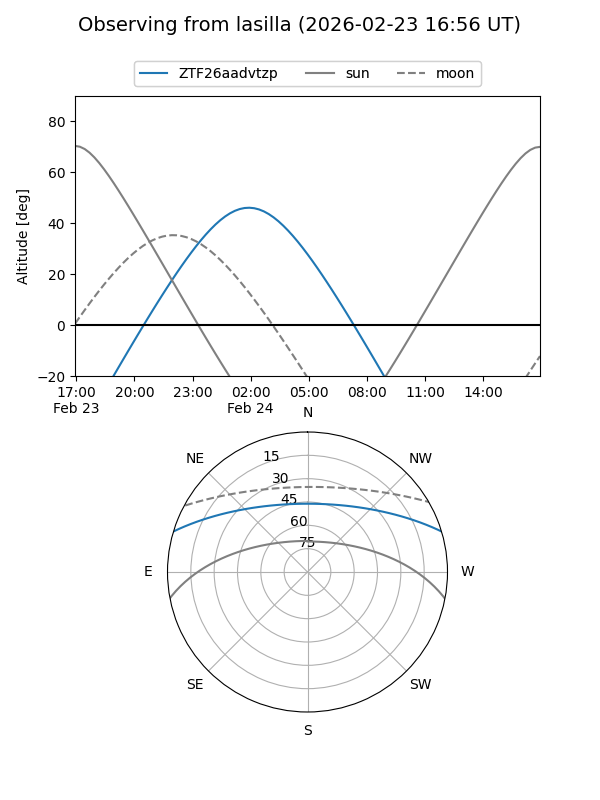
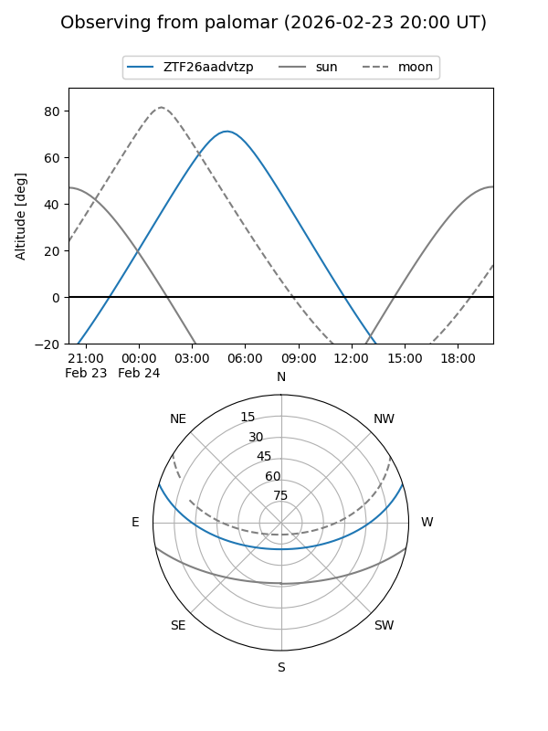

ZTF26aadvtzp
Target ZTF26aadvtzp at 2026-01-26 10:21
Aliases and brokers:
FINK: link
Lasair: link
ALeRCE: link
alt names
ZTF26aadvtzp (ztf,fink_ztf)
Coordinates:
equatorial (ra, dec) = 111.4010,+14.68769
equatorial (HMS+DMS) = 07:25:36.24,+14:41:15.67
galactic (l, b) = (203.4281,+14.09214)
Flags:
Photometry:
last ztfr=16.98
1 ztfr detections
Lightcurve

Visibility


Additional plots